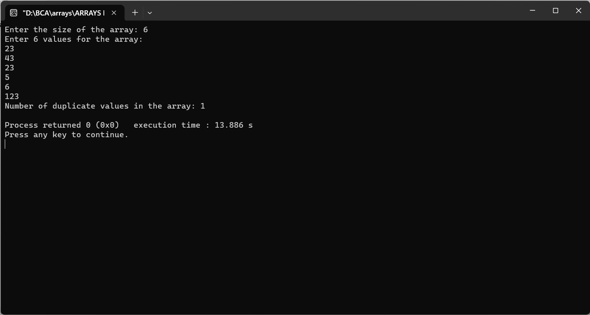

Enter an array from user and count the duplicate values
#include
int main() {
int size;
printf("Enter the size of the array: ");
scanf("%d", &size);
int arr[size];
printf("Enter %d values for the array:\n", size);
for (int i = 0; i < size; i++) {
scanf("%d", &arr[i]);
}
int count = 0; // Initialize the count of duplicates to 0
for (int i = 0; i < size - 1; i++) {
if (arr[i] != 0) { // To avoid counting duplicates more than once
for (int j = i + 1; j < size; j++) {
if (arr[i] == arr[j]) {
count++;
arr[j] = 0; // Mark the duplicate as 0 to avoid recounting
}
}
}
}
printf("Number of duplicate values in the array: %d\n", count);
return 0;
}
